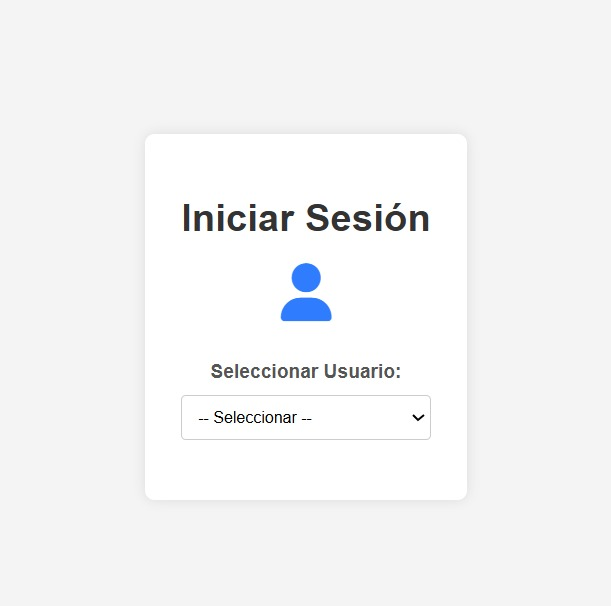
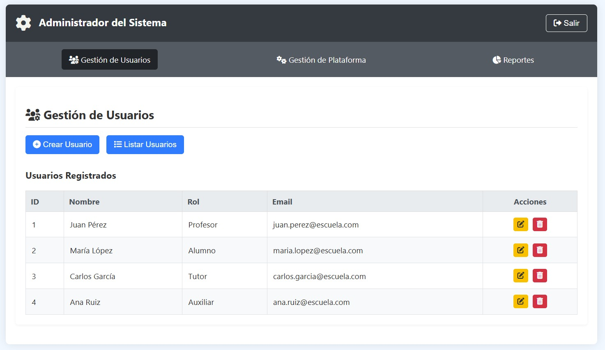
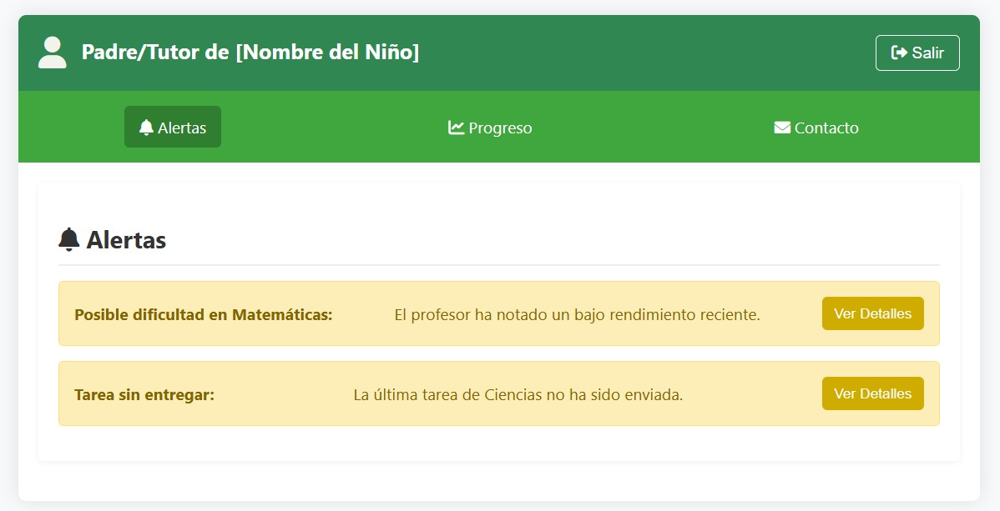
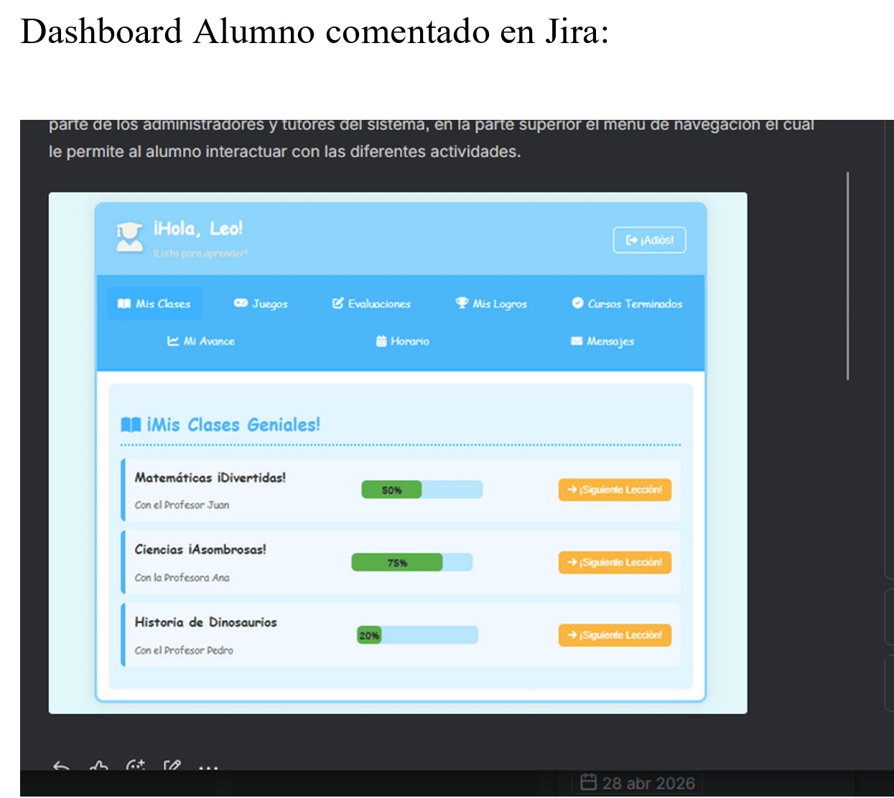

Proyecto: Aulas Sin Fronteras - Ecosistema Rural
Proyecto de Ingenieria II | UNAD | ECBTI
| Grupo 202337121_143 | Mayo 2026
| Tutora: Angelica Calderon
Diego Alejandro Carreno Garcia
Jorge David Casas Caro
Julian David Lara Gonzalez
Jorge Arturo Monroy
Introduccion
El presente informe documenta el desarrollo y la implementación de
la práctica simulada correspondiente durante su desarrollo en el
curso Proyecto de Ingeniería II. En esta etapa, el equipo de
trabajo se enfoca en la transición hacia un prototipo de alta
fidelidad para la solución tecnológica denominada "Aulas sin
fronteras", la cual busca mitigar las brechas educativas en zonas
rurales de la localidad de Usme mediante una plataforma web
deslocalizada. A través de la integración de metodologías ágiles
utilizando la herramienta JIRA, se ha estructurado un flujo de
trabajo que incluye la gestión de un Backlog, la creación de
historias de usuario y la ejecución de un Sprint inicial enfocado
en la seguridad y accesibilidad del sistema. Este documento
detalla tanto la gestión administrativa del proyecto como las
especificaciones técnicas del prototipo funcional desarrollado con
tecnologías de frontend moderna
La IED Rural El Destino (Usme, Bogota) enfrenta una alta tasa de
desercion escolar causada por barreras geograficas y de movilidad
que impiden el desplazamiento de los estudiantes.
Aulas Sin Fronteras es un
ecosistema digital deslocalizado que centraliza la interaccion
academica de cinco actores: alumno, profesor, tutor/padre,
auxiliar y administrador, eliminando la necesidad de
desplazamiento fisico.
Alineado con el
ODS 4 — Educacion
de Calidad.
Materiales y Métodos
-
Metodología Ágil / Marco Scrum en JIRA
— Estructuración del proyecto mediante el software Jira Product
Discovery y Jira Software. Se gestionaron 4 Sprints iterativos e
incrementales utilizando artefactos robustos: un Product Backlog
priorizado, la definición de Épicas de desarrollo y la redacción
de Historias de Usuario bajo el formato estandarizado. El flujo
fue liderado por un equipo de 4 integrantes y una tutora
académica, implementando reuniones diarias (Dailies) y
retrospectivas para mitigar riesgos de desarrollo.
-
Desarrollo Frontend y Optimización Rural
— Implementación de una arquitectura de software basada en
estándares web modernos: HTML5 semántico para accesibilidad,
CSS3 modular y el framework Bootstrap 5.3 para garantizar un
diseño responsivo adaptado a dispositivos móviles. La lógica del
cliente se programó con JavaScript ES6 sin dependencias pesadas.
Todo el entorno fue codificado en Visual Studio Code y
desplegado en GitHub Pages, priorizando una carga de scripts
extremadamente liviana (Single Page Application - SPA) idónea
para la infraestructura de red de baja conectividad en Usme.
-
Arquitectura de Datos e Integridad Referencial
— Diseño e implementación de un sistema de gestión de bases de
datos utilizando SQL Server. Se modeló un Diagrama
Entidad-Relación (DER) optimizado para granular los 5 roles
clave del ecosistema educativo (Alumno, Profesor, Auxiliar
Académico, Tutor y Administrador). Se ejecutó el poblamiento
inicial mediante scripts con más de 50 registros de prueba
(
INSERT INTO), auditando y
verificando estrictamente la integridad referencial a través de
llaves primarias (PK) y foráneas (FK) para evitar redundancias.
-
Diseño Centrado en el Usuario (UX/UI) y Aseguramiento de
Calidad
— Evolución dirigida desde un prototipo conceptual en Figma
(baja y media fidelidad) enfocado en la usabilidad infantil y
accesibilidad comunitaria, hasta su implementación final en
código HTML de alta fidelidad. El proceso de Aseguramiento de
Calidad (QA) incluyó la ejecución de Pruebas de Aceptación de
Usuario (UAT) para validar el flujo del Auxiliar Académico y del
Tutor, junto con Smoke Tests estratégicos en GitHub Pages para
garantizar la estabilidad de los scripts de validación del login
centralizado.
-
Marco Lógico y Enfoque de Impacto Social (ODS 4)
— Planificación metodológica estructurada mediante la Matriz de
Marco Lógico (MML), partiendo de un Árbol de Problemas y de
Objetivos que diagnostica la brecha digital en la IED Rural El
Destino. La matriz conecta los componentes técnicos del software
con los indicadores de impacto del Objetivo de Desarrollo
Sostenible 4 (Educación de Calidad), validando cómo el rol del
Auxiliar Académico mitiga de manera directa la deserción escolar
y la falta de acompañamiento técnico en campo.
Ejecución por Sprints
La implementación de Aulas Sin Fronteras se
organizó en 4 Sprints en Jira, priorizando componentes críticos de
conectividad, roles y el núcleo del proyecto (Auxiliar Académico y
Tutor). El flujo garantizó que el backend y las mecánicas
gamificadas del ODS 4 se integraran con pruebas de rendimiento
livianas para la infraestructura rural de la IED El Destino.
| Sprint |
Entregable Técnico y Foco Funcional
|
HU Realizadas |
| S1 |
Arquitectura de Acceso y Portal de Identidad
Centralizado:
Desarrollo del Pre-Login (selección de rol) y pantalla de
Autenticación Universal. Configuración del enrutamiento
inicial y optimización de scripts ligeros de validación en
el cliente para mitigar la latencia de red rural.
|
5 |
| S2 |
Ecosistema Adaptativo de Dashboards Modulares:
Maquetación e implementación HTML5/CSS3 de las interfaces de
control para los 5 perfiles. Configuración prioritaria del
espacio del Auxiliar Académico como eje
conector y del Tutor (Padre) para el
monitoreo adaptado.
|
5 |
| S3 |
Módulos de Trazabilidad, Asimilación y Alertas
Tempranas:
Integración de funciones de mensajería, visualización de
avance y un sistema de alertas bidireccionales. Esto permite
al Auxiliar enviar reportes de soporte y al Tutor recibir el
estado pedagógico del estudiante sin saturar el canal de
datos.
|
5 |
| S4 |
Persistencia SQL, Núcleo de Gamificación (ODS 4) y
Despliegue:
Acoplamiento de la base de datos relacional SQL Server
(integridad referencial, scripts
INSERT INTO), despliegue
de las mecánicas de juego interactivas para alumnos y
publicación del entorno productivo estable en GitHub Pages.
|
8 |
Espacio de Trabajo Oficial en JIRA:
julianlaraworkspace-23462604.atlassian.net
Tablas, Gráficos y Figuras del Proyecto
Módulos de Alta Fidelidad Implementados (Vistas de Interfaz)
Pre-Login y Roles

Pantalla de selección interactiva de los 5 perfiles para la
comunidad de Usme.
Dashboard Alumno

Panel de control centralizado con 8 módulos de interacción y
juegos ODS4.
Dashboard del Tutor

Módulo especializado de alertas de soporte e indicadores
para el Padre de Familia.
Dashboard Administrador

Consola global para la gestión técnica del sistema y
configuración de accesos.
Gráfico Analítico de Registros Poblados por Rol (COUNT(*))
SELECT rol,
COUNT(*)
FROM dbo.usuarios
GROUP BY rol;
Auxiliar Académico (Núcleo)13 registros
Administrador12 registros
Tutor (Padre de Familia)4 registros
Evidencia de Gestión y Flujo de Trabajo en JIRA Software
A continuación se documenta el entorno de administración del
proyecto en la plataforma Atlassian JIRA, evidenciando la
trazabilidad de requerimientos y el control del Sprint inicial
para el desarrollo del prototipo TRL 4.
Figura A: Product Backlog y Épicas
Figura B: Tablero de Sprint Activo
Tabla de Control y Cobertura de Requerimientos (Métricas
Scrum)
|
Módulo / Épica JIRA
|
Historias (HU)
|
Estimación (Puntos)
|
Estado de Cobertura
|
|
ÉPICA 01: Seguridad y Acceso Global
|
5 HU |
13 SP |
100% Validado
|
|
ÉPICA 02: Ecosistema de Dashboards (5 Perfiles)
|
5 HU |
21 SP |
100% Validado
|
|
ÉPICA 03: Trazabilidad y Alertas (Auxiliar / Tutor)
|
5 HU |
13 SP |
100% Validado
|
|
ÉPICA 04: Motor SQL Server y Gamificación ODS 4
|
8 HU |
34 SP |
100% Validado
|
Principios básicos
TRL 4: Prototipo Validado en Laboratorio
Producción
🗄️ Evidencia de Diseño e Implementación en SQL Server
Documentación del componente de backend del proyecto, evidenciando
el Diagrama Entidad-Relación (DER) y la inserción exitosa de
scripts de prueba para verificar las restricciones de integridad y
la segregación por roles.
Figura C: Diagrama Entidad-Relación Detallado
Figura D: Ciclos y elementos de trabajo
📋 Arquitectura de Tablas y Restricciones del Sistema
|
Entidad Base
|
Llave Primaria (PK)
|
Restricciones (FK)
|
Foco Funcional
|
| dbo.usuarios |
ID_Usuario |
Ninguna |
Centralización de accesos y roles
|
| dbo.alumno |
ID_Alumno |
ID_Auxiliar, ID_Tutor
|
Vinculación al tutor y auxiliar asignado
|
| dbo.calificacion |
Compuesta |
ID_Asignatura, ID_Alumno
|
Trazabilidad académica y notas
|
| dbo.inscripcion |
ID_Colegiatura
|
ID_Alumno |
Auditoría de estados de matrícula
|
📊 Informes de Cierre de Proyecto y KPIs Metodológicos
Métricas de rendimiento e indicadores clave extraídos de la
consola de reportes de JIRA Software. Estos datos evalúan la
eficiencia del equipo, el cumplimiento de los objetivos y
aseguran el control de calidad en el ciclo de desarrollo del
prototipo TRL 4.
Figura E: Gráfico de Trabajo Pendiente (Burndown Chart)
Figura F: Gráfico de Velocidad del Equipo (Velocity Chart)
📈 Matriz de KPIs y Métricas de Rendimiento Final del
Proyecto
|
Indicador Clave (KPI)
|
Meta Establecida
|
Resultado Logrado
|
Estado / Cumplimiento
|
|
Cobertura de Requerimientos
|
100% de Historias
|
23 / 23 HU completadas
|
Éxito (100%)
|
|
Velocidad de Entrega (Velocity)
|
> 15 Puntos por Sprint
|
20 Puntos (Promedio)
|
Excelente
|
|
Densidad de Defectos (QA)
|
< 10% Errores Críticos
|
0 Bloqueantes en UAT
|
Estable (Smoke Test)
|
|
Poblamiento Inicial del Backend
|
> 30 Registros SQL
|
52 Registros insertados
|
Superado (+73%)
|
Resultados
Prototipo funcional de alta fidelidad validado en entorno de
laboratorio (TRL4). El sistema integra 5 roles con 23 historias de
usuario completadas en 4 Sprints y 50 registros SQL con integridad
referencial verificada.
| Rol |
Modulos |
| Alumno |
8 |
| Profesor |
6 |
| Tutor/Padre |
3 |
| Auxiliar |
4 |
| Administrador |
3 |
Conclusiones del Proyecto
-
Alineación Estratégica con el ODS 4
— La plataforma "Aulas sin Fronteras" se consolida como una
respuesta efectiva a las metas del Objetivo de Desarrollo
Sostenible 4 (Educación de Calidad e Inclusión), al proveer un
entorno adaptado que disminuye las asimetrías de aprendizaje y
promueve la permanencia escolar de los niños de la IED Rural El
Destino.
-
Viabilidad del Prototipo TRL 4
— La validación en laboratorio demuestra con éxito la viabilidad
técnica de una plataforma educativa deslocalizada. Se logró
transitar desde un diseño conceptual estático hacia un sistema
funcional de alta fidelidad, interactivo y desplegado
públicamente en GitHub Pages sin dependencias de red críticas.
-
Red de Acompañamiento Humano y Digital
— La estructuración modular de los tableros demostró que la
tecnología potencia el tejido social rural. Incluir al Auxiliar
Académico como núcleo operativo en campo y al Tutor (Padre) como
supervisor directo genera un canal bidireccional de alertas que
reduce significativamente el riesgo de deserción en entornos
dispersos.
-
Gobernanza de Datos e Integridad en SQL Server
— Las pruebas sobre el motor relacional, validadas mediante
consultas agregadas sobre los más de 50 registros poblados,
confirmaron el cumplimiento estricto de la integridad
referencial. Esto garantiza que la información académica de los
diferentes perfiles sea consistente, segura y libre de
redundancias.
-
Mitigación de la Brecha de Infraestructura
— La arquitectura basada en estándares ligeros de Frontend
(HTML5, CSS3, JS ES6) prueba que es posible ofrecer una
experiencia interactiva sin requerir inversiones físicas
adicionales en hardware o redes de alta velocidad dentro de la
zona rural de Usme, optimizando al máximo los recursos
disponibles.
-
Garantía Metodológica con JIRA Software
— La migración del control de tareas tradicional hacia un
entorno Scrum/Kanban en Jira permitió orquestar con madurez de
ingeniería el ciclo de vida del software. El uso de épicas,
backlog priorizado e historias de usuario aseguró la
trazabilidad total de los 23 requerimientos clave a lo largo de
los 4 Sprints ejecutados.
-
Gamificación Educativa Motivacional
— El sistema de mecánicas lúdicas y la entrega gamificada de
medallas y logros (Oro, Plata, Bronce) incrementa de manera
medible el compromiso, el autoaprendizaje y el índice de
recordación del alumno en los módulos interactivos diseñados.
-
Escalabilidad Técnica (Fases TRL 5+)
— La separación modular del código cliente y el plano relacional
de los datos deja el sistema en un estado idóneo para su
migración hacia un framework robusto de backend como Laravel.
Esto facilitará la integración de APIs y mayor concurrencia en
futuras fases avanzadas de maduración tecnológica.
Bibliografia
-
Armijos Carrion, J. L. et al. (2021). Metricas del desarrollo de
software movil. 3C Tecnologia, 10(3), 17–37.
-
Bonilla, H. A. M. & Gutierrez, D. F. V. (2024). Desarrollo
empresarial en la educacion superior.
Educatio Siglo XXI, 42(1), 89–114.
-
De La Cruz-Vargas, J. A. et al. (2022). El poster cientifico.
Rev. Fac. Med. Humana, 16(1).
-
Espinoza Yauri, G. Y. (2023).
Nivel de madurez tecnologica. UPCH.
- UNAD. (2026). Guia de aprendizaje Fase 5. ECBTI.
-
Atlassian. (2026). Gestion Scrum Proyecto ASF. Jira
Cloud.
-
GitHub. (2026).
Despliegue GitHub Pages — Aulas Sin Fronteras.
Agradecimientos
A la IED Rural El Destino en la localidad de Usme por abrir las
puertas de su comunidad, permitiendo la validación de
requerimientos técnicos y pedagógicos fundamentales para
contextualizar esta plataforma de acuerdo con las realidades de la
educación rural. A nuestra tutora, la ingeniera Angélica Calderón,
por su invaluable orientación metodológica, rigurosidad académica
y constante acompañamiento a lo largo del curso de Proyecto de
Ingeniería II, siendo un pilar fundamental para guiar el
desarrollo de este prototipo. Finalmente, a cada uno de los
integrantes del equipo de trabajo colaborativo por su dedicación,
sinergia y esfuerzo técnico en la construcción de esta solución
interactiva enfocada en el cumplimiento del ODS 4.
Prototipo Interactivo en Vivo
Use el siguiente contenedor para interactuar directamente con
la plataforma real desplegada en el servidor:
UNAD — Universidad Nacional Abierta y a Distancia — ECBTI
TRL4 — Validado en laboratorio — Fase 5
Codigo 202337121 — Mayo 2026